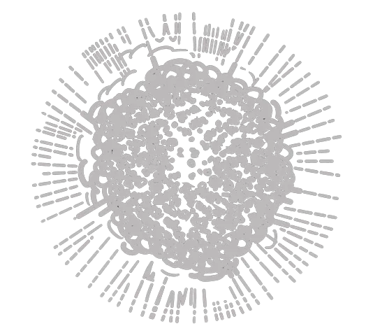
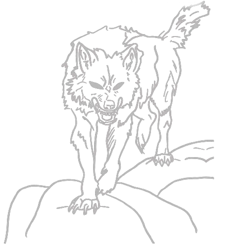
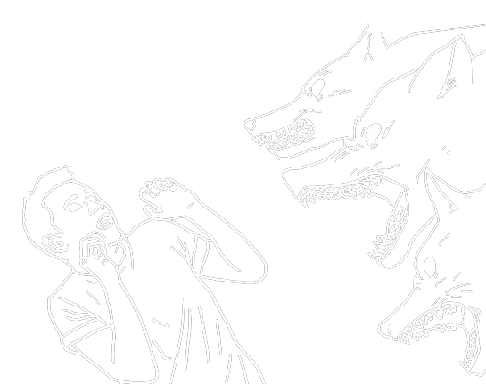
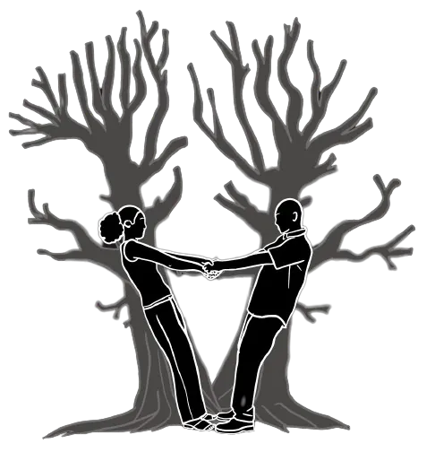
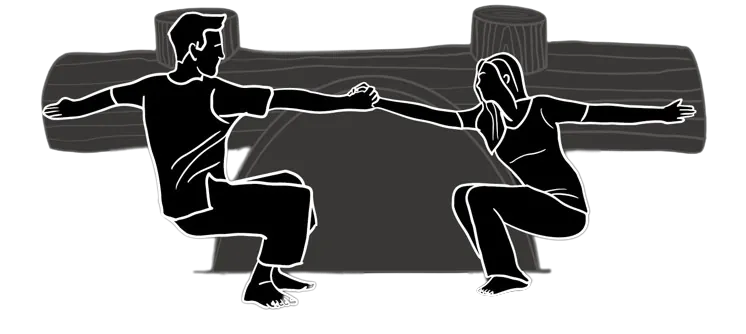
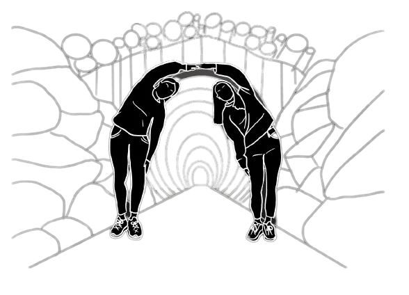

Join the excitement of a team-based adventure! In this thrilling challenge, players must synchronize their movements by deciphering the shapes displayed on the screen and perfectly mimicking them to achieve victory. Prepare to immerse yourself in a synchronized interactive adventure in the shadows!
The Experience
Step into an immersive world, where sound, lights, and visuals guide your journey through a narrative. An enriching experience that challenges and entertains, promoting memorable moments of collaboration, amusement, and the discovery of hidden talents.
The Game's Narrative
In a post-apocalyptic world, Earth is shrouded in darkness following the destruction of the sun. A group of survivors has established a colony with an artificial sun.

The absence of sunlight has triggered the evolution of blind, fast-moving predators. To reach the colony safely, you must mimic the shapes of tunnel objects to evade these hunters.

Success leads to the sunlit colony with essential resources, while failure leaves you exposed to these relentless predators.

Interactive System
We use Google's pose detection and image segmentation to track body movements and create lifelike shadows. Players will physically interact with the system, responding to hints on a digital screen. Inspired by games like Just Dance, it offers accessible motion tracking without extensive equipment.
Teamwork
Teams find themselves immersed in a captivating scenario, confined within a room with a unique mission: they must flawlessly replicate the shapes and movements of objects in perfect synchrony within a specified timeframe to evade pursuing monsters. Only when this collective effort of mirroring is successfully executed will the door unlock, granting the team their much-awaited freedom.

